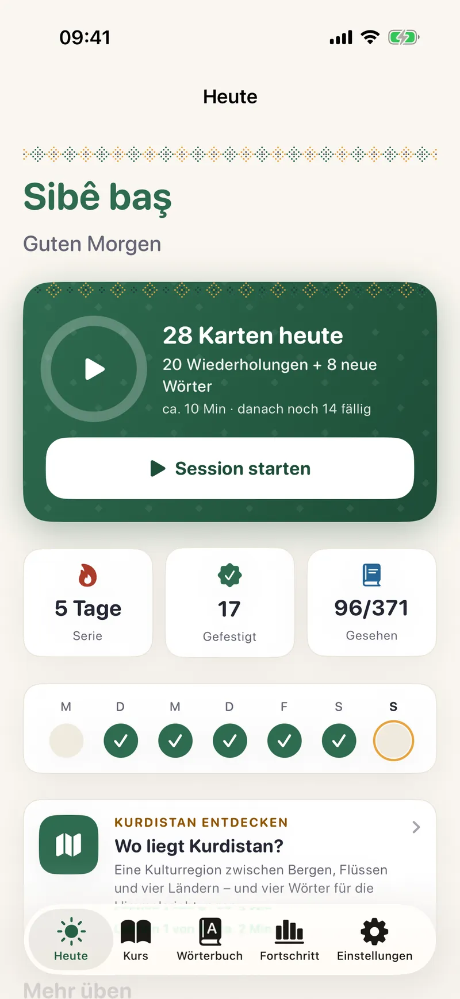
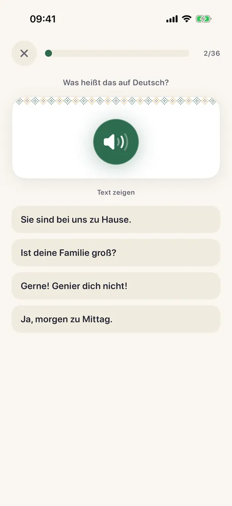
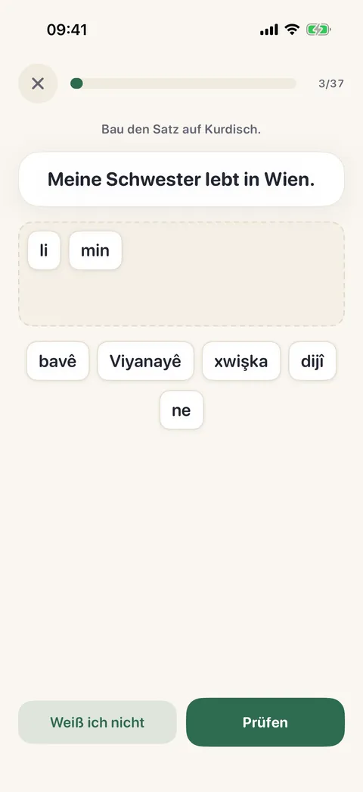
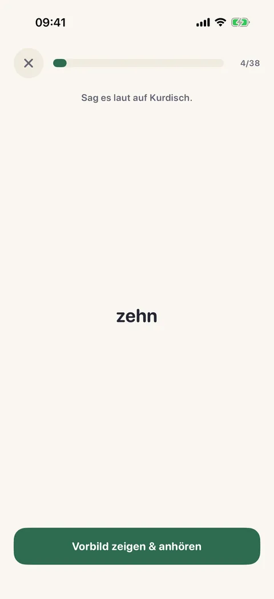
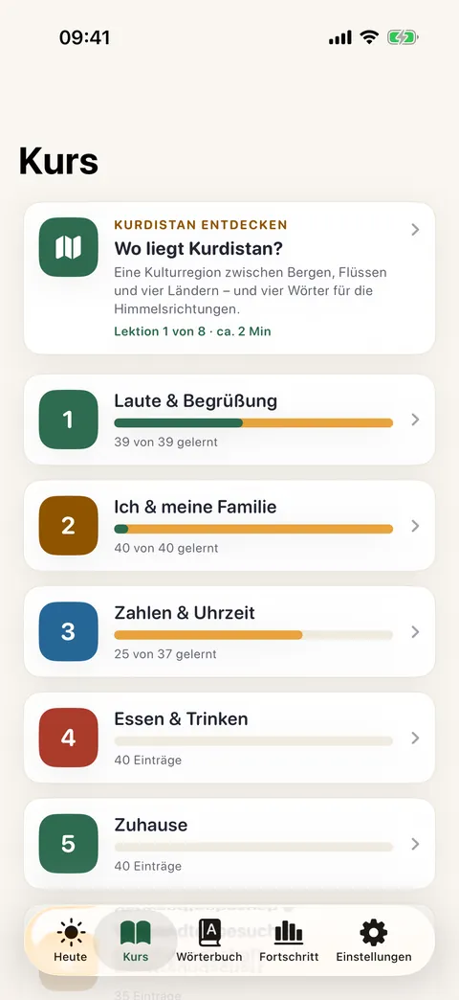
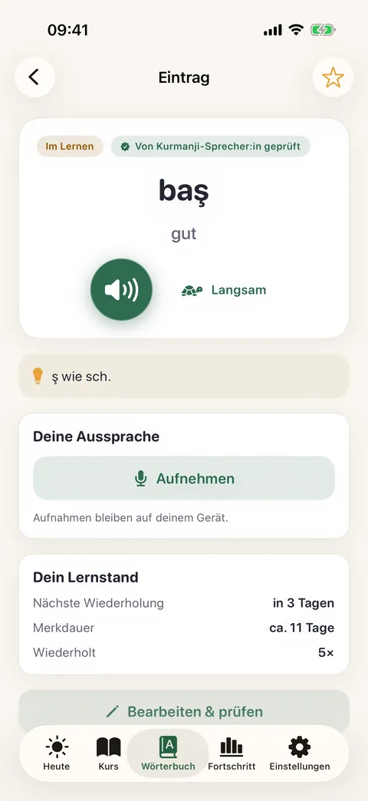
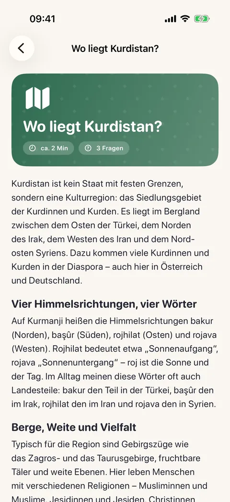
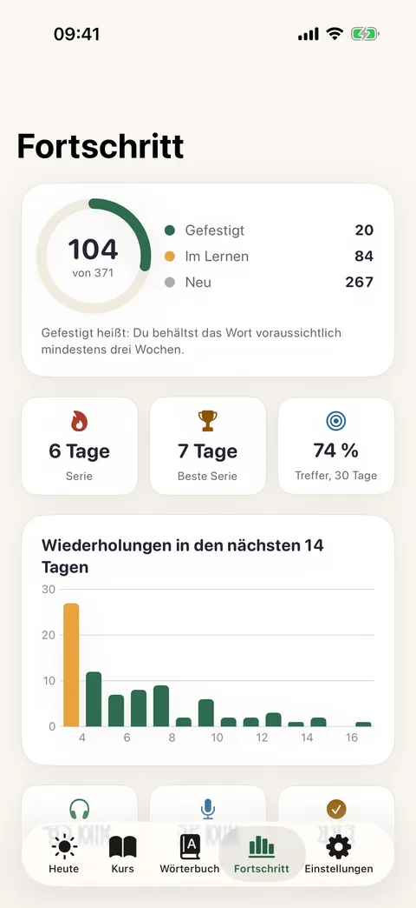

Kurmanji lernen · für iPhone und iPad
Kurdisch lernen, hêdî hêdî.
Eine App für Deutschsprachige: Du hörst, baust Sätze selbst und wiederholst genau dann, wenn du etwas sonst vergessen würdest. Ohne Konto, ohne Werbung.
Für iPhone und iPad ab iOS 18. Kostenlos laden, 7 Tage gratis testen, danach 19,99 € im Jahr.
Hêdî hêdî heißt auf Kurdisch „langsam, Schritt für Schritt“. So ist die App gebaut: kleine Einheiten, jeden Tag ein bisschen. Pausen gehören dazu.

Hêdî Hêdî in 40 Sekunden
Hören, Sätze bauen, im richtigen Moment wiederholen und Kurdistan entdecken. Alle Bildschirme sind echte Aufnahmen aus der App.
Schalte den Ton ein: Du hörst Kurmanji so, wie es auch in der App klingt.
Hören, bauen, sprechen
Kurmanji ist die meistgesprochene kurdische Sprache und wird in Lateinschrift geschrieben (Hawar-Alphabet). Die App führt dich von den ersten Lauten bis zum Smalltalk und baut Brücken zu dem, was du aus dem Deutschen schon kennst.

Erst hören, dann verstehen
Zu jedem Wort, Satz und Dialog gibt es Audio, auf Wunsch langsam. In den Übungen hörst du zuerst, der Text bleibt auf Wunsch verborgen. So gewöhnt sich dein Ohr an Laute wie q, ê oder x, die es im Deutschen so nicht gibt.

Setz den Satz selbst zusammen
Du liest den deutschen Satz und baust den kurdischen aus Wörtern. So übst du die Wortstellung. Dieselben Wörter in anderer Reihenfolge zählen als „fast“, denn manche Reihenfolgen gehen im Kurdischen auch anders. Dazu gibt es Tippen mit einer Leiste für ç ê î ş û (fehlende Akzente werden freundlich verziehen).

Nachsprechen und vergleichen
Sprich nach, nimm dich auf und höre dich neben dem Vorbild an. Die App bewertet deine Aussprache nicht, du vergleichst selbst: keine Note, kein Zwang. Deine Aufnahmen bleiben auf dem Gerät. In den Dialogen übernimmst du eine Rolle, die App spielt die andere.
44 Einheiten in vier Stufen
44 Einheiten mit 1744 Einträgen, von A1 (die ersten Wörter) bis B2 (diskutieren und Briefe schreiben). Dazu Aussprache, Grammatik und ein Blick auf das Land, in dem die Sprache zu Hause ist.
A1 · Erste Schritte
- 1Laute & Begrüßung39
- 2Ich & meine Familie40
- 3Zahlen & Uhrzeit37
- 4Essen & Trinken37
- 5Zuhause40
- 6Verwandtenbesuch & Gastfreundschaft35
- 7Einkaufen & Geld36
- 8Wegbeschreibung & Orte37
- 9Tagesablauf31
- 10Gefühle, Wetter & Smalltalk36
- 11Farben & Kleidung37
- 12Körper & Gesundheit38
A2 · Im Alltag
- 13Reisen & Verkehr38
- 14Arbeit & Berufe38
- 15Im Restaurant & Café40
- 16Telefon & Nachrichten39
- 17Haushalt & Alltagsaufgaben40
- 18Schule & Lernen39
- 19Feste & Feiertage40
- 20Gestern & früher40
- 21Pläne & Zukunft40
- 22Hobbys & Freizeit40
- 23Tiere, Natur & Jahreszeiten42
- 24Vergleichen & Beschreiben41
B1 · Selbstständig
- 25Meinungen & Gefühle äußern42
- 26Wünsche, Bedingungen & Möglichkeiten42
- 27Geschichten & Märchen erzählen40
- 28Nachrichten & Medien42
- 29Beim Arzt & in der Apotheke41
- 30Behörden, Bank & Post41
- 31Wohnen, Miete & Nachbarschaft41
- 32Land, Landwirtschaft & Umwelt41
- 33Heirat, Familie & Traditionen41
- 34Sprache, Bücher & Schreiben41
- 35Reiseerlebnisse & Erinnerungen42
- 36Heimat, Migration & Neuanfang41
B2 · Sicher und flüssig
- 37Arbeitswelt & Bewerbung42
- 38Wirtschaft, Technik & digitaler Alltag41
- 39Wissenschaft, Bildung & Forschung41
- 40Kunst, Musik & Dengbêj41
- 41Redewendungen & Segenswünsche41
- 42Diskutieren & Argumentieren41
- 43Formelle Briefe & höfliche Sprache41
- 44Zukunft, Klima & Verantwortung41
Kurdistan entdecken · Lektionen
- 1Wo liegt Kurdistan?
- 2Berge, Flüsse und Seen
- 3Städte und Dörfer
- 4Newroz – das Frühlingsfest
- 5Gastfreundschaft und Tee
- 6Musik und die Dengbêj
- 7Sprache und Schrift
- 8Mem û Zîn – eine große Liebesgeschichte
Jede Lektion hat Schlüsselwörter und ein kleines Quiz. Sachlich und unpolitisch: Kurdistan als Kulturregion, mit Landschaft, Festen, Musik und Literatur.
- Aussprache-Schule
- Die kniffligen Laute (q/k, e/ê, i/î, r, w/v) mit deutschem Vergleich und Minimalpaaren.
- Dialoge
- Übernimm eine Rolle, die App spielt die andere. So übst du Gespräche, bevor du sie wirklich führst.
- Grammatik-Häppchen
- Kurz, klar, mit Brücke zum Deutschen. Du musst keine Tabellen lernen.
- Wörterbuch
- Mit akzentfreier Suche: Tippe „sev“ und finde „şev“. Du kannst jeden Eintrag selbst korrigieren und als geprüft markieren.



Wiederholen im richtigen Moment
Die App nutzt FSRS, einen modernen, offenen Algorithmus für verteiltes Wiederholen. Er schätzt für jedes Wort, wie fest es sitzt, und fragt es genau dann wieder ab, wenn du es fast vergessen hättest. Mit jeder Wiederholung hält das Wort länger.
- Du siehst, wann es wiederkommt
- Über jedem Bewertungsknopf steht das Intervall („Gut · 3 Tage“).
- Du bestimmst das Tempo
- Gedächtnis-Ziel (85, 90 oder 95 Prozent) und neue Wörter pro Tag stellst du selbst ein.
- Geprüft statt geschätzt
- Die Berechnung wird in Tests Schritt für Schritt mit der offiziellen FSRS-Bibliothek verglichen.
Ruhig dranbleiben, ohne Druck
Dein Tag auf einen Blick: Was heute dran ist, deine Serie und die Woche. Das Widget zeigt es auf dem Home- und Sperrbildschirm, ohne dass du die App öffnen musst.
- Erinnerung ohne Nörgeln
- Optional. Höchstens eine Mitteilung pro Tag, nur wenn wirklich etwas dran ist, und nie, wenn du heute schon geübt hast.
- Der Text sagt, was wartet
- Zum Beispiel „3 Wiederholungen sind dran, dazu 5 neue Wörter.“ Bei sehr vielen steht keine Zahl, sondern ein ruhiger Satz.
- Pausen gehören dazu
- Die Serie reißt erst, wenn ein ganzer Tag ausgelassen wird, und die App macht dir deshalb kein schlechtes Gewissen.

Kostenlos laden, sieben Tage testen
Hêdî Hêdî Plus schaltet alle Einheiten, Dialoge, Grammatik-Häppchen, das Wörterbuch und die Kurdistan-Lektionen frei. Kostenlos bleibt die Aussprache-Schule. Was du schon gelernt hast, kannst du auch ohne Abo weiter wiederholen.
Das Abo verlängert sich automatisch um ein Jahr, wenn du nicht mindestens 24 Stunden vor Ablauf kündigst. Kündigen kannst du jederzeit in den Einstellungen deiner Apple-ID, bezahlt wird über Apple. Einzelheiten stehen im Support.
Alles bleibt auf deinem Gerät
Hêdî Hêdî braucht kein Konto. Du lernst, die App merkt sich den Stand, mehr passiert nicht. Nur den Kauf des Abos wickelt Apple ab.
- Kein Konto, keine Werbung
- Es gibt nichts zu registrieren und nichts, das dich unterbricht.
- Kein Tracking
- Keine Analyse-Werkzeuge, keine Drittanbieter-Software, keine Verbindung zu uns oder Dritten.
- Aufnahmen bleiben bei dir
- Das Mikrofon wird erst gefragt, wenn du aufnehmen willst, und nichts wird ausgewertet oder übertragen.
- Du kannst deinen Stand sichern
- Als Datei, die du selbst ablegst, zum Beispiel in iCloud Drive. Beim Gerätewechsel liest du sie wieder ein.
Fehler gefunden?
Wörter, Sätze, Dialoge, Hinweise, die Kurdistan-Lektionen und die Stimme wurden von einer Kurmanji sprechenden Person durchgesehen. Einzelne Fehler können trotzdem durchrutschen, vor allem bei Aussprache, Betonung und Redewendungen.
Jeder Eintrag zeigt, ob er geprüft ist. Du kannst ihn korrigieren und als geprüft markieren. Wenn du Kurmanji sprichst und etwas findest, freuen wir uns über eine Nachricht an den Support.
Häufige Fragen
Welche Sprache lerne ich genau?
Kurmanji, auch Nordkurdisch genannt, in Lateinschrift (Hawar-Alphabet mit ç ê î ş û). Sorani und die arabische Schrift kommen in der App nicht vor.
Brauche ich Vorkenntnisse?
Nein. Die erste Einheit beginnt bei den Lauten und der Begrüßung. Die App ist für Deutschsprachige gemacht, die Hinweise sind auf Deutsch.
Wie ist der Kurs aufgebaut?
In vier Stufen nach dem Europäischen Referenzrahmen: A1 (Erste Schritte), A2 (Im Alltag), B1 (Selbstständig) und B2 (Sicher und flüssig). Die Kurs-Seite zeigt für jede Stufe, wie weit du bist, und welche Einheit als Nächstes dran ist.
Wie viel Zeit brauche ich pro Tag?
Eine Session dauert meist weniger als 10 Minuten. Wie viele neue Wörter pro Tag dazukommen, stellst du selbst ein. Regelmäßig und kurz ist besser als selten und lang.
Funktioniert die App ohne Internet?
Ja. Alle Inhalte und das Audio sind in der App. Nur der Kauf und die Verlängerung des Abos brauchen eine Verbindung zu Apple.
Was kostet Hêdî Hêdî?
Du lädst die App kostenlos und startest mit 7 Tagen gratis (für neue Abonnentinnen und Abonnenten). Danach kostet Hêdî Hêdî Plus 19,99 € pro Jahr. Es schaltet alle Einheiten, Dialoge, Grammatik-Häppchen, das Wörterbuch und die Kurdistan-Lektionen frei und verlängert sich automatisch, wenn du nicht mindestens 24 Stunden vor Ablauf kündigst. Kündigen kannst du jederzeit in den Einstellungen deiner Apple-ID. Kostenlos bleibt die Aussprache-Schule.
Auf welchen Geräten läuft sie?
Auf iPhone und iPad ab iOS 18, auch im Querformat und mit Tastatur (Tasten 1 bis 4 bewerten). Dunkelmodus, große Schrift und VoiceOver werden unterstützt.
Wie sicher sind die Inhalte?
Sie wurden von einer Kurmanji sprechenden Person durchgesehen, aber einzelne Fehler sind möglich. Jeder Eintrag zeigt, ob er geprüft ist, und lässt sich in der App korrigieren.
Wo erreiche ich euch?
Auf der Seite Support & Kontakt.